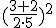
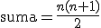

Ejercicio 1
Escribir un programa que muestre por pantalla la cadena ¡Hola Mundo!.
print ("¡Hola Mundo!")Escribir un programa que muestre por pantalla la cadena ¡Hola Mundo!.
print ("¡Hola Mundo!")Escribir un programa que almacene la cadena ¡Hola Mundo! en una variable y luego muestre por pantalla el contenido de la variable.
mensaje = "¡Hola Mundo!"
print(mensaje)Escribir un programa que pregunte el nombre del usuario en la consola y después de que el usuario lo introduzca muestre por pantalla la cadena ¡Hola <nombre>! , donde <nombre> es el nombre que el usuario haya introducido.
nombre = input("Introduce tu nombre: ")
print("¡Hola " + nombre + "!")Escribir un programa que muestre por pantalla el resultado de la siguiente operación aritmética ({\frac{3+2}{2\cdot 5}})^2
...
print(((3 + 2) / (2 * 5)) ** 2)Escribir un programa que pregunte al usuario por el número de horas trabajadas y el coste por hora. Después debe mostrar por pantalla la paga que le corresponde.
horas = float(input("Introduce tus horas de trabajo: "))
coste = float(input("Introduce lo que cobras por hora: "))
paga = horas * coste
print("Tu paga es", paga)Escribir un programa que lea un entero positivo, 𝑛, introducido por el usuario y después muestre en pantalla la suma de todos los enteros desde 1 hasta 𝑛. La suma de los 𝑛 primeros enteros positivos puede ser calculada de la siguiente forma:
\mbox{suma} = \frac{n(n+1)}{2}
...
n = int(input("Introduce un número entero: "))
suma = n * (n + 1) / 2
print("La suma de los primeros números enteros desde 1 hasta " + str(n) + " es " + str(suma))Escribir un programa que pida al usuario su peso (en kg) y estatura (en metros), calcule el índice de masa corporal y lo almacene en una variable, y muestre por pantalla la frase Tu índice de masa corporal es <imc> donde <imc> es el índice de masa corporal calculado redondeado con dos decimales.
peso = input("¿Cuál es tu peso en kg? ")
estatura = input("¿Cuál es tu estatura en metros?")
imc = round(float(peso)/float(estatura)**2,2)
print("Tu índice de masa corporal es " + str(imc))Escribir un programa que pida al usuario dos números enteros y muestre por pantalla la <n> entre <m> da un cociente <c> y un resto <r> donde <n> y <m> son los números introducidos por el usuario, y <c> y <r> son el cociente y el resto de la división entera respectivamente.
n = input("Introduce el dividendo (entero): ")
m = input("Introduce el divisor (entero): ")
print(n + " entre " + m + " da un cociente " + str(int(n) // int(m)) + " y un resto " + str(int(n) % int(m)))Escribir un programa que pregunte al usuario una cantidad a invertir, el interés anual y el número de años, y muestre por pantalla el capital obtenido en la inversión.
cantidad = float(input("¿Cantidad a invertir? "))
interes = float(input("¿Interés porcentual anual? "))
años = int(input("¿Años?"))
print("Capital final: " + str(round(cantidad * (interes / 100 + 1) ** años, 2)))Una juguetería tiene mucho éxito en dos de sus productos: payasos y muñecas. Suele hacer venta por correo y la empresa de logística les cobra por peso de cada paquete así que deben calcular el peso de los payasos y muñecas que saldrán en cada paquete a demanda. Cada payaso pesa 112 g y cada muñeca 75 g. Escribir un programa que lea el número de payasos y muñecas vendidos en el último pedido y calcule el peso total del paquete que será enviado.
peso_payaso = 112
peso_muñeca = 75
payasos = int(input("Introduce el número de payasos a enviar: "))
muñecas = int(input("Introduce el número de muñecas a enviar: "))
peso_total = peso_payaso * payasos + peso_muñeca * muñecas
print("El peso total del paquete es " + str(peso_total))Imagina que acabas de abrir una nueva cuenta de ahorros que te ofrece el 4% de interés al año. Estos ahorros debido a intereses, que no se cobran hasta finales de año, se te añaden al balance final de tu cuenta de ahorros. Escribir un programa que comience leyendo la cantidad de dinero depositada en la cuenta de ahorros, introducida por el usuario. Después el programa debe calcular y mostrar por pantalla la cantidad de ahorros tras el primer, segundo y tercer años. Redondear cada cantidad a dos decimales.
inversion = float(input("Introduce la inversión inicial: "))
interes = 0.04
balance1 = inversion * (1 + interes)
print("Balance tras el primer año:" + str(round(balance1, 2)))
balance2 = balance1 * (1 + interes)
print("Balance tras el segundo año:" + str(round(balance2, 2)))
balance3 = balance2 * (1 + interes)
print("Balance tras el tercer año:" + str(round(balance3, 2)))Una panadería vende barras de pan a 3.49€ cada una. El pan que no es el día tiene un descuento del 60%. Escribir un programa que comience leyendo el número de barras vendidas que no son del día. Después el programa debe mostrar el precio habitual de una barra de pan, el descuento que se le hace por no ser fresca y el coste final total.
barras = int(input("Introduce el número de barras vendidas que no son frescas: "))
precio = 3.49
descuento = 0.6
coste = barras * precio * (1 - descuento)
print("El coste de una barra fresca es " + str(precio) + "€")
print("El descuento sobre una barra no fresca es " + str(descuento * 100) + "%")
print("El coste final a pagar es " + str(round(coste, 2)) + "€")Obra publicada con Licencia Creative Commons Reconocimiento Compartir igual 4.0